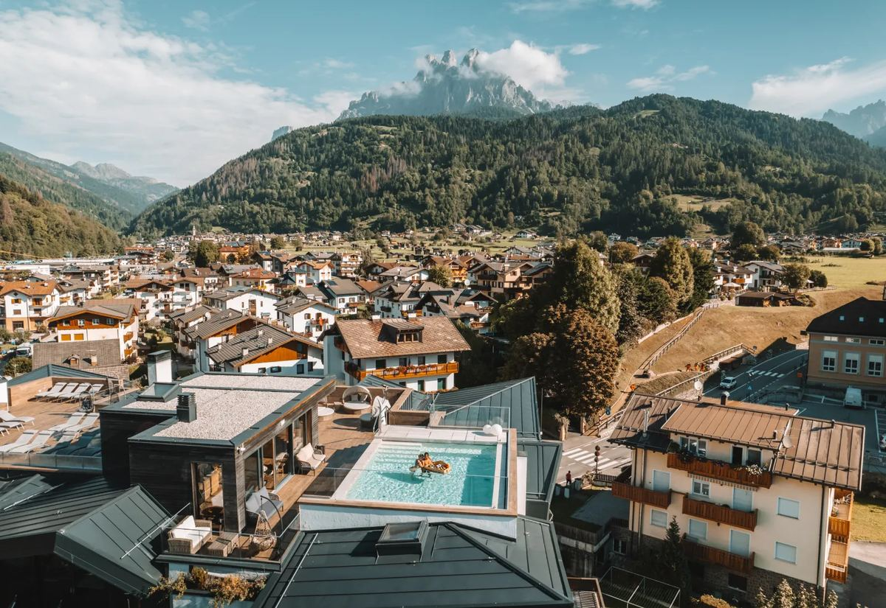

Brunet Resort — vista dalla piscina panoramica
Link rapidi
Il link del menu va ancora aggiunto — appena disponibile, aggiornalo qui.
Da non perdere
Attività & passeggiate facili
Escursioni
= stesso spirito del Lago di Calaita: camminata facile + rifugio con vista per pranzo.
Malghe & rifugi per pranzo
Come il Miralago a Calaita: da prenotare o verificare l'apertura prima di partire.
Contatti utili
Da ricordare
📶 Scarica le mappe offline prima di arrivare.
🎒 Zaino giornaliero: acqua, giacca a vento, crema solare, scarpe da trekking, costume.